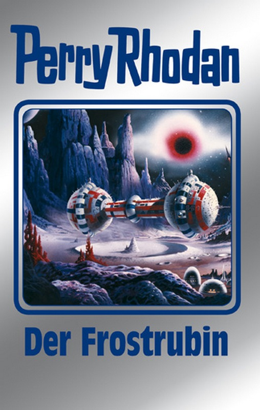

von Marc Richter
Hubert Haensel (© VPM)
(mr) – Vor dem Hintergrund des neuen Perry Rhodan-Silberbandes 130 erhielt Corona Magazine-Redakteur Marc Richter die Gelegenheit für ein exklusives Interview mit dem verantwortlichen Autor Hubert Haensel.
Worum geht es in Silberband 130?
Dieses Buch wird den Titel Der Frostrubin tragen. Damit ist eingefleischten Lesern der Serie klar, es geht um den Zyklus »Die Endlose Armada« aus den Jahren 1982 bis 1984.
Lesern, die nicht ganz so im Thema sind, soll hier ein kurzer Überblick gegeben werden, worum es geht. Das ist an dieser Stelle allerdings alles andere als einfach. Die Handlung ist sehr weitläufig und von vielen Schauplätzen und Nebenschauplätzen durchzogen.
Im März 426 Neuer Galaktischer Zeitrechnung bricht Perry Rhodan mit der Galaktischen Flotte zu einer Expedition ins Ungewisse auf: Es sind rund 20.000 Raumschiffe aus zahlreichen Völkern der Milchstraße, an ihrer Spitze die BASIS. Die Flotte steuert den geheimnisvollen Frostrubin an. Dort wollen Rhodan und seine Begleiter die Bedrohung durch die negative Superintelligenz Seth-Apophis stoppen.
Doch als sich die Galaktische Flotte dem Frostrubin nähert, wird sie mit einem gigantischen Gebilde konfrontiert. Es ist die Endlose Armada, eine Ansammlung von Millionen und Abermillionen von Raumschiffen, die sich über Lichtjahre hinweg erstreckt. Seit Äonen suchen die Wesen an Bord dieser Schiffe ebenfalls nach dem Frostrubin.
Gegen diese Übermacht haben die Galaktiker keine Chance. Doch Perry Rhodan weiß: Will er die Gefahr durch Seth-Apophis beseitigen, muss er die Konfrontation mit der Endlosen Armada wagen ...
Das Interview
Corona Magazine: Wie fühlt man sich als Autor, die Romane der vielen Urgesteine, wie beispielsweise Karl-Herbert Scheer oder William Voltz (die ja leider nicht mehr leben), aufzugreifen und als Silberband zusammenzufassen?
Hubert Haensel: Ich bin mit Band 209 der Erstauflage zu Perry Rhodan gestoßen und seitdem Leser und Fan der Serie. Perry Rhodan begleitet mich also schon eine beachtliche Zeit und ist damit zugleich ein Stück meines Lebens. Hinzu kommt, dass ich bereits in den 80er-Jahren des letzten Jahrhunderts meine ersten Perry Rhodan-Taschenbücher schreiben durfte und seit 1994 Stammautor bin.
Das heißt, ich kenne die Serie aus der Sicht des Lesers ebenso wie aus der des Autors. Ich empfinde Bewunderung und Respekt vor der Leistung der Autoren der ersten Stunde – hinsichtlich ihrer Ideenfülle und ebenso, weil ich den Arbeitsaufwand kenne, mit einfacher Schreibmaschine und etlichen Kohlepapier-Durchschlägen zu schreiben. Von den zu jener Zeit auch schon notwendigen Recherchen ohne moderne Hilfsmittel ganz zu schweigen.
Es waren also durchaus gemischte Gefühle, als ich anfing, die Werke meiner Vorgänger und Vorbilder zu überarbeiten und zu Buchinhalten zusammenzufassen. Am Anfang zögerte ich deshalb hin und wieder bei mancher Streichung oder bei notwendigen Veränderungen. Wobei ich schnell feststellen durfte, dass ich das Vertrauen meiner Autorenkollegen genoss. Ernst Vlcek sagte mir einmal, dass ich seine Romane so bearbeiten dürfe, wie ich das im Konzept für richtig und notwendig erachte.
Ohnehin versuche ich, die Heftromane so zusammenzufassen, wie ich es als Leser gern sehen möchte. Als Autor muss ich zudem die Notwendigkeiten berücksichtigen, die das Medium Buch vom Heftroman unterscheiden. Beides zusammen wird hoffentlich auch weiterhin Garant für spannende und interessante »Silberbände« sein.
Corona Magazine: Sowohl die Art zu schreiben als auch der politische und gesellschaftliche Zeitgeist nahmen oftmals Einfluss auf die Zyklen der Perry Rhodan-Serie. Wie sehen Sie den Zyklus in Bezug auf den heutigen Zeitgeist?
Hubert Haensel: Ich gestehe ein, dass ich noch nicht über Zusammenhänge zwischen dem aktuellen Zyklus »Die Endlose Armada« und dem heutigen Zeitgeist nachgedacht habe. Immerhin wurde dieser Zyklus vor rund dreißig Jahren geschrieben, unter Voraussetzungen, die nur bedingt mit unserem derzeitigen Umfeld zu tun haben können. Nicht einmal der Kalte Krieg war da noch so kalt, wie er heute schon wieder wird.
Ich sehe eher das große Ganze, das uns Perry Rhodan vermittelt: Dass wir selbst und unsere Erde nur ein Staubkorn im Universum sind und dass es für die Schöpfung wohl unerheblich sein wird, falls wir uns eines Tags eigenhändig unserer Lebensgrundlagen berauben werden. Wir verlieren uns in banalen politischen und militärischen Grabenkämpfen, verprassen die Ressourcen unseres Planeten und sehen Hautfarbe, Abstammung und Glauben als Kriterien für Mord und Totschlag. Dabei vergessen wir das einzig Wichtige, unsere Zukunft. Das habe ich schon in frühen Jahren aus Perry Rhodan herausgelesen.

Perry Rhodan Silberband 130 (© VPM)
Corona Magazine: Wieviel Hubert Haensel steckt in Silberband 130?
Hubert Haensel: Darüber mache ich mir bewusst keine Gedanken. Meine Zusammenfassungen sollen spannend und unterhaltsam sein und vor allem das Flair der Perry Rhodan-Serie so erhalten, wie es zu jener Zeit zum Ausdruck kam.
Halt, vielleicht doch ... vielleicht steckt wirklich etwas mehr Hubert Haensel in Silberband 130, als ich selbst erkennen konnte. Es gibt da die »Lebensgeschichte« des Eric Weidenburn. Ursprünglich erschienen als Heft 1094 unter dem Titel »Der Mann aus Haiti«. Wir könnten ausgiebig darüber diskutieren, ob diese Geschichte für den Handlungsfortschritt wichtig ist oder nicht. Ich halte sie jedenfalls für faszinierend und eine der vielen Facetten, die Perry Rhodan so vielseitig und abwechslungsreich machen. In der normalen Abfolge hätte ich dieses Heft in Buch 129 ansiedeln müssen.
Ich habe es nicht getan, weil es dort den Handlungsablauf gestört hätte. Also doch entfallen lassen? Nein. Vielmehr habe ich ein Novum begründet und Heft 1094 in den nächsten Zyklus übernommen. Eric Weidenburn hat nämlich in Silberband 130 mehr direkte Handlung als zuvor. Genau deshalb fand ich an dieser Stelle seine Lebensgeschichte besser platziert. Ja, mit solchen Dingen steckt Hubert Haensel öfter in dem einen oder anderen Silberband.
Corona Magazine: Muss man als Autor die Heftromane nochmal alle durchgehen und wie wählt man die Bände aus, die schließlich im Silberband zusammengefasst werden?
Hubert Haensel: Das ausführlich zu beantworten, würde fast ins Endlose führen. Ich muss die Hefte kennen und vor allem: Ich muss mich nach über 30 Jahren an die Details erinnern. Wenn ich mir dessen nicht völlig sicher bin, heißt das, mich rechtzeitig neu zu informieren. Immerhin wird nicht ein Buchinhalt nach dem anderen abgehandelt, sondern der jeweilige Zyklus muss schon zu Anfang zumindest im Groben durchgeplant sein. Schließlich gilt es zu vermeiden, dass mir für das letzte Buch eines Zyklus plötzlich nur noch 150 Seiten zur Verfügung stehen. Veränderungen gibt es dann immer noch genug.
Ein anderer wichtiger Punkt sind die unterschiedlichen Handlungsfäden. Was im Heftroman durchaus seine Berechtigung hat, wenn z.B. der Haluter Icho Tolot mit einer eigenständigen Handlungsebene nur alle acht bis zehn Wochen auftaucht, würde mit etwa 40 bis 50 Seiten in mehreren Büchern nacheinander eher zerfasert wirken. Auch hier muss ich rechtzeitig erkennen, ob ich diese Handlung zu einem größeren Block zusammenfassen kann.
Corona Magazine: Welchen persönlichen Bezug haben Sie zum Zyklus »Die Endlose Armada«?
Hubert Haensel: Den Bezug des Lesers, dem es Spaß und Entspannung gebracht hat, jede Woche seinen Perry Rhodan-Roman am Kiosk zu holen und danach zu verschlingen. Aber das trifft auf jeden Zyklus zu. Bei der Endlosen Armada war es die Faszination der riesigen, nicht mehr zu überblickenden Flotte aus Raumschiffen vieler Völker. Dazu das kosmische Geschehen, das Erscheinen Taurecs als Gesandter der Kosmokraten ...
Corona Magazine: Wenn Sie die Möglichkeit hätten, den Rat der damaligen Autoren einzuholen, was und wen würden Sie fragen?
Hubert Haensel: Würde ich fünf Autoren fragen, würde ich mindestens drei unterschiedliche Sichtweisen erhalten. Insofern hatte Ernst Vlcek schon recht, als er mir sagte, ich solle das tun, was ich für richtig halte.
Und wenn ich die Möglichkeit hätte, jetzt noch einen der damaligen Autoren zu fragen, dann würde ich mich an William Voltz wenden. Weil er als Exposéautor für die Handlung des aktuellen Zyklus zuständig war. Wer sonst könnte mir über die Gedanken und Gefühle, die sich hinter der Endlosen Armada und alle Drumherum verbergen, besser und zutreffender Auskunft geben?
Corona Magazine: Was hätten Sie anders gemacht, wenn Sie damals bereits an der Serie mit geschrieben hätten?
Hubert Haensel: Darüber wage ich gar nicht zu spekulieren. Ich kann auch nicht einfach behaupten, dass das, was ich vielleicht anders gemacht hätte, bei der Bearbeitung des jeweiligen Silberbandes tatsächlich anders wird, also umgeschrieben, gekürzt oder gar gestrichen. Das sind Kleinigkeiten, die ich keinesfalls unter »anders machen« einordnen würde. Solche Änderungen, das wird jeder Autor bestätigen, sind tagesformabhängig.
Ich schreibe heute »Ende« unter ein Manuskript und bin zufrieden. Schaue ich es mir nach vier Wochen wieder an, werde ich höchstwahrscheinlich die eine oder Formulierung anders gestalten. Gehe ich ein halbes Jahr später noch einmal an das Manuskript, mache ich vielleicht einige der Änderungen wieder rückgängig und stelle dafür andere Dinge um.
Unter »anders machen« verstehe ich bei Perry Rhodan, größere Handlungsabschnitte zu verändern. Dafür sehe ich keine Notwendigkeit. Die Kosmologie des Zwiebelschalenmodells ist nun einmal so, wie sie ist, und jeder Eingriff würde enorme Folgen nach sich ziehen. Das Leben hält auch keine Möglichkeit bereit, Geschehenes anders zu machen. Nun ja, von Kleinigkeiten abgesehen.
Ich bin mir sicher, Perry Rhodan bietet nicht nur gute Unterhaltung, sondern zudem viel Stoff, um über unser Leben und unseren Planeten nachzudenken. Eigentlich ist der Traum von einer guten Zukunft aktueller denn je.
Corona Magazine: Vielen herzlichen Dank für dieses Interview!
Man darf gespannt auf den Silberband 130 und die Geschichte rund um die Endlose Armada sein. Als Erscheinungstermin wird der 11. Mai 2015 angegeben.